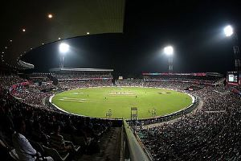
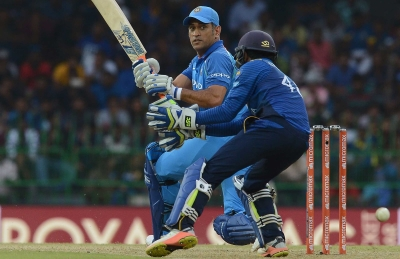
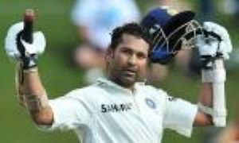
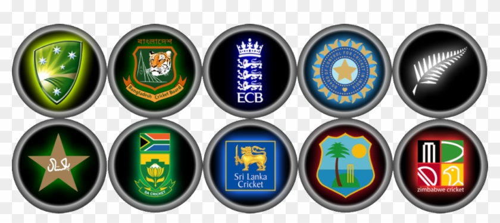

|  |
CricketWhat is cricket ?Cricket is a bat-and-ball game played between two teams of eleven players on a field at the centre of which is a 22-yard pitch with a wicket at each end, each comprising two bails balanced on three stumps. The batting side scores runs by striking the ball bowled at the wicket with the bat (and running between the wickets), while the bowling and fielding side tries to prevent this (by preventing the ball from leaving the field, and getting the ball to either wicket) and dismiss each batter (so they are "out"). Means of dismissal include being bowled, when the ball hits the stumps, and by the fielding side either catching the ball after it is hit by the bat, but before it hits the ground, or hitting a wicket with the ball before a batter can cross the crease in front of the wicket. When ten batters have been dismissed, the innings ends and the teams swap roles. The game is adjudicated by two umpires, aided by a third umpire and match referee in international matches. |
|  |
✨Legends of cricket✨ |
 |
International teams in cricket
|
 |
There are three formats of cricket played at the international level – Test matches, One-Day Internationals and Twenty20 Internationals.
These matches are played under the rules and regulations approved by the International Cricket Council, which also provides match officials for them.